Zepto Cafe
Zepto was the grocery app. The plan was to make it the food app too, and to own one idea: hot food in 10 minutes ⏱️.
This is V1. We started with zero Cafe kitchens, launched with 40, and grew past 650 across India.
Groceries 🥦 in 10 minutes made sense to people. Food 🍕 in 10 minutes made them a little suspicious.
If food shows up in 10 minutes, people picture it sitting in a box somewhere. Every screen had to quietly show who cooks it, when, and how.
Quick commerce apps rarely sell groceries and hot food side by side. People had to find Cafe without it getting in the way of their grocery run.
 0 → 40stores at launch
0 → 40stores at launch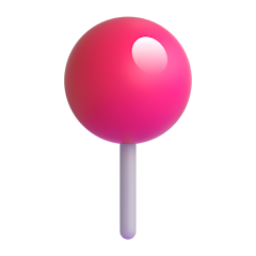
650+stores across India 10 minthe promise we had to keep
10 minthe promise we had to keepBefore designing, I went and listened
Lunch break is 40 minutes. If food takes 30 to come, I'm eating it in class.
I'd try it if it's cheap. But is it fresh, or just heated up?
At 4 pm I just want a coffee and a snack without leaving my desk.
Fast is fine. But if it tastes like a packet, I'm not ordering again.
For the kids, I need to know who cooked it and when.
10 minutes? Sounds like it was already sitting somewhere.
Getting found
We started where grocery users already were. A tooltip on the Cafe tab, a sheet that said hello when Cafe reached your area, and a small "hungry? your food is here" card in the home feed.
Present everywhere, never in the way of the grocery run.
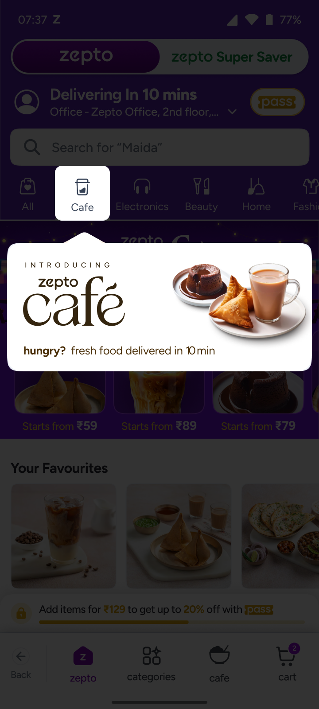
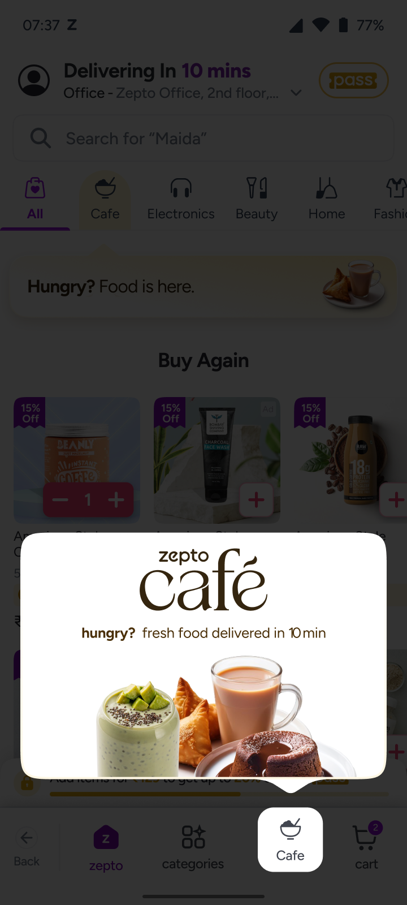
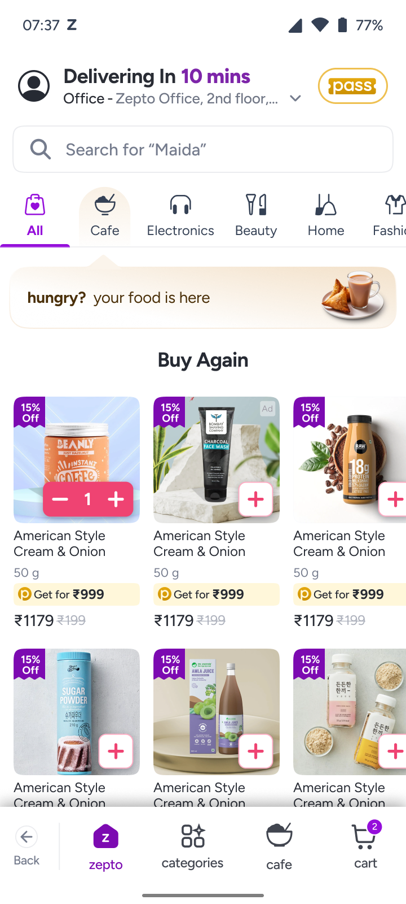
A front door
Zepto now had three stores in one app. Cafe got its own front-door card on the store picker, with real dishes and real prices on it. A ₹49 chai ☕ says food before you even tap.
A home that answers two questions
Every section answers "what should I eat?" or "can I trust it?". The top leads with proof: 1 crore+ orders, a 4.6 rating, top chefs. Bestsellers help people who can't decide, and Reorder 🔁 is for people who order the same thing again and again. Explore by mood lets you pick a feeling instead of a category. What's on your mind and Explore categories are quick jumps for people who already know. Best picks shows what's good today, Know your food explains how and where it's made, and Snacks and drinks makes one more thing easy.
Scroll the phone to see the whole page
"Is it really fresh?"
Tap the trust strip and a sheet answers it: made after you order, chefs who know the drill, clean kitchens, real ratings.
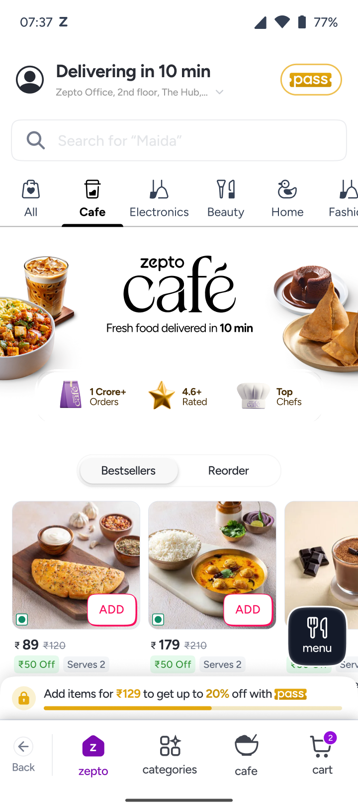
Fresh food you can trust
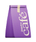
Made fresh, never stored
- You orderNothing is cooked before this
- Chef cooksRight then, in the kitchen near you
- Packed hotSealed the moment it's ready
- At your doorIn about 10 minutes
Nothing frozen or reheated.
Chefs who know the drill
- Trained on every recipe
- Same taste, every city
- Checked before packing
Clean kitchens, every day
- FSSAI licensed
- Audited daily
- Caps and gloves
- Sealed packs
Ratings and reviews
Fresh food you can trust
Made fresh, never stored
- You orderNothing is cooked before this
- Chef cooksRight then, in the kitchen near you
- Packed hotSealed the moment it's ready
- At your doorIn about 10 minutes
Nothing frozen or reheated.
Chefs who know the drill
- Trained on every recipe
- Same taste, every city
- Checked before packing
Clean kitchens, every day
- FSSAI licensed
- Audited daily
- Caps and gloves
- Sealed packs
Ratings and reviews
The menu, upfront
Inside the multitab app, Cafe sits next to groceries, electronics and beauty. A long scroll there feels like a supermarket aisle, not a cafe.
So the menu is one tap away. The floating button 🍴 opens every section, breakfast, snacks, coffee, pizza, and people jump straight to what they came for, like at a cafe counter.
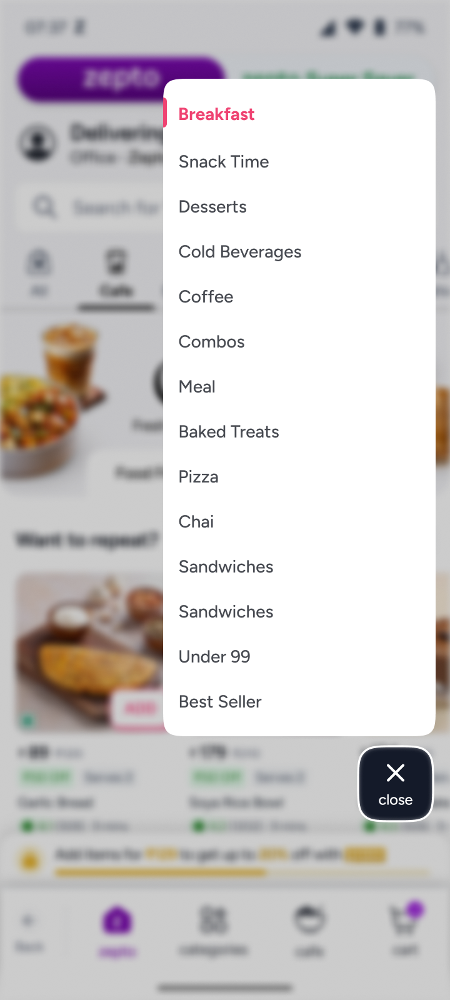
One more thing in every order
The goal: one more cookie 🍪 in every order, without it feeling like a sales pitch.
We tried more than a dozen sheets: sizes and sugar, "complete your dish", add-on lists, price-drop banners, out-of-stock states. What shipped puts discounted add-ons right where you pick your Maggi, with a "price drop unlocked" 🔓 moment and a tooltip that explains the deal once.
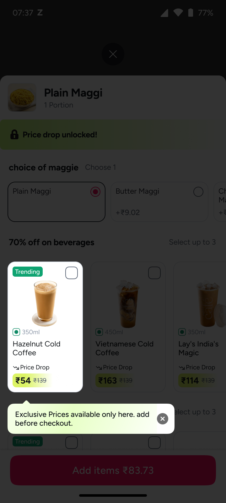
It worked, and fast
We tested the new sheet against the old one. More people picked add-ons, and more of them went on to order.
Make it feel alive
A cafe changes with the season. Festive takeovers turned the home into an event: Cafe Carnival 🎪, Christmas, New Year. Launch moments like a free Vietnamese cold coffee gave people a reason to try Cafe for the first time.
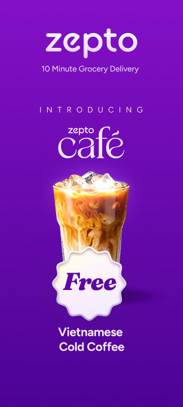
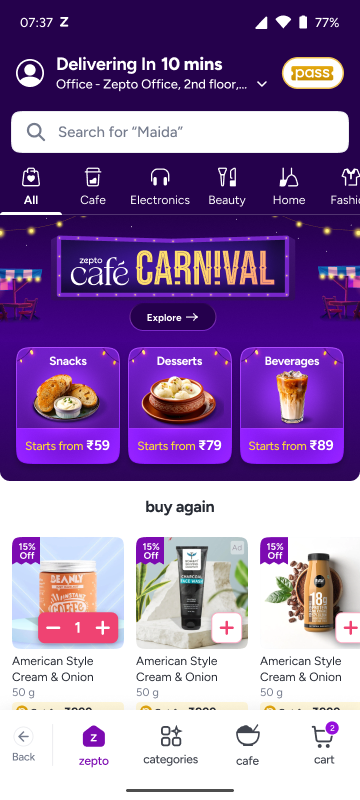
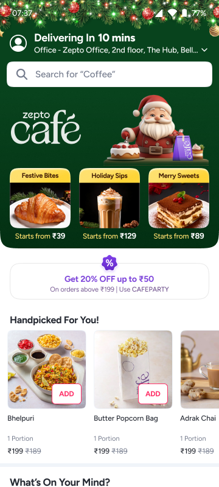
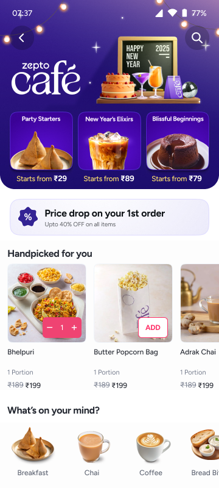
Shop by mood
Nobody searches for "beverages". They want something crispy 🍿 at 1 AM. So the menu is grouped by moments, late night, gourmet, healthy, each with its own look, plans like Bold Brews and Sassy Sweets, and its own deals.
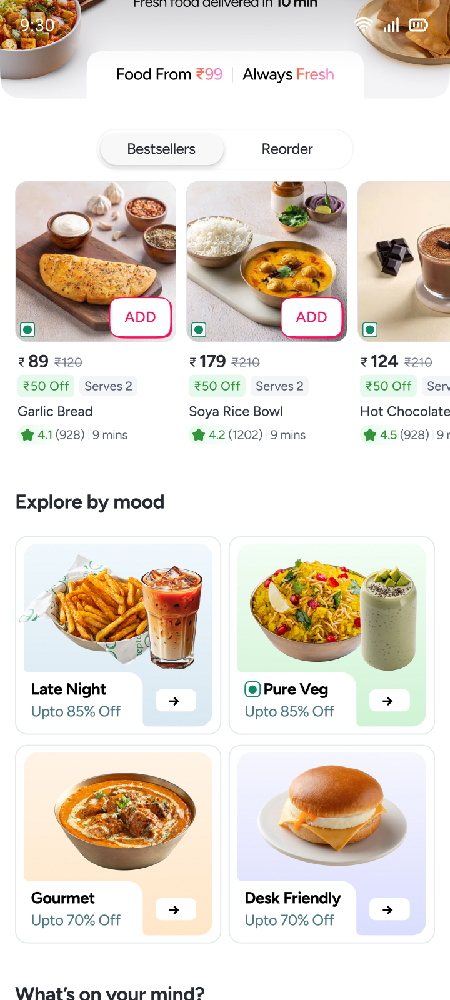
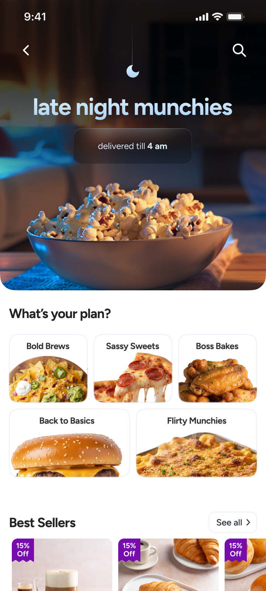
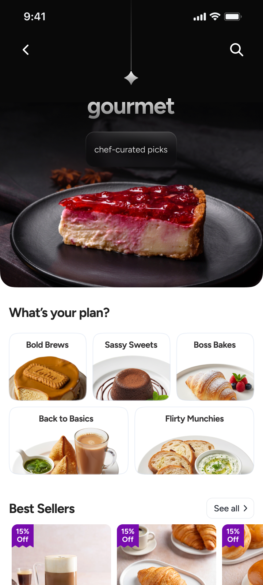
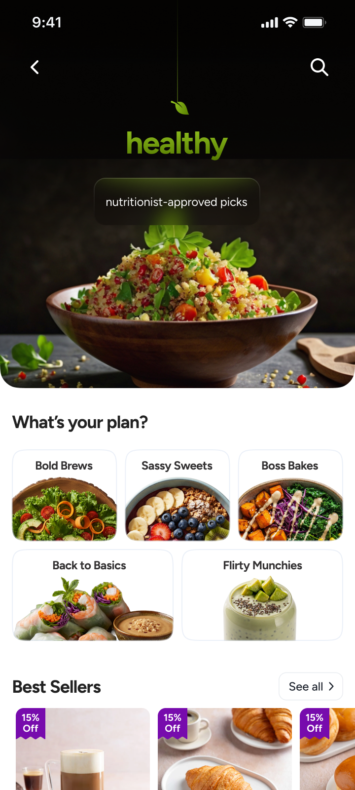
Moods turned taps into orders
In the first two months, a mood tap was one of the most reliable ways into an order.
What changed
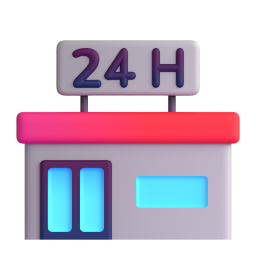
40 → 650Cafe stores, from launch to today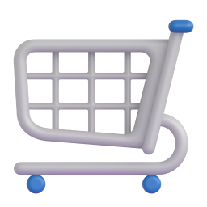
1 in 3people who tapped a mood added something to their cart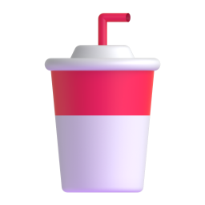
+20%more add-ons picked with the new customisation sheet +13%more people went from customising to ordering
+13%more people went from customising to ordering 189combo orders in the first 12 hours, with only a fifth of users seeing it
189combo orders in the first 12 hours, with only a fifth of users seeing itMood numbers from April 12 to June 11, 2025. Customisation numbers from an A/B test against the old design.
What it took
I came in as a visual designer. Owning a product end to end, from research to rollout, was new for me, and hard.
I asked for it constantly. Rahul, Ayush, Chirag, Akhil and the whole Zepto team gave it generously, and it shaped every screen.
A fast pod meant no time for formal studies. I went to NIFT campuses, tea shops, cafes and sidewalks, and asked people what they thought of Zepto Cafe ☕.
Thanks for scrolling this far. Hungry yet? 😋
 3 to 10 s
3 to 10 s 1 → many
1 → many Animated
Animated 1 mascot
1 mascot